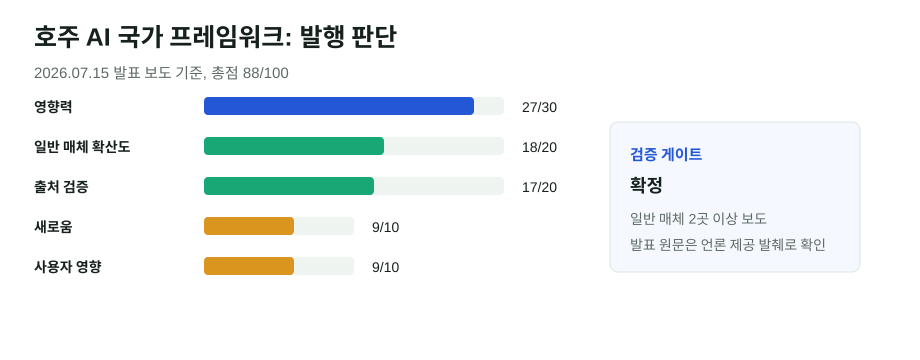

호주, AI 사무소와 데이터센터 규칙을 한 프레임으로 묶었다
호주 총리 앤서니 앨버니지가 AI 전담 사무소, 데이터센터 전력·물 사용 기준, 창작자 저작권 보호를 하나의 국가 프레임으로 묶겠다고 밝혔다. 단순한 AI 윤리 선언이 아니라 전력망, 투자 승인, 저작권 협상을 함께 다루는 정책 신호라는 점에서 오늘의 글로벌 메인 후보로 선정했다.
핵심 요약
AI 규제가 모델 성능이 아니라 인프라와 저작권 비용으로 이동하고 있다
WSJ와 Guardian은 2026년 7월 15일 시드니 연설을 근거로 호주가 총리실 산하 Office of AI를 만들고, 대형 데이터센터가 신규 전력 공급과 접속 비용을 부담하도록 하는 기준을 준비한다고 보도했다. 창작물의 무단 학습에 대해서도 정부가 강한 보호 입장을 냈다.

선정 이유
이번 발표는 AI를 산업정책, 에너지정책, 저작권정책으로 동시에 다룬다. AI 서비스가 커질수록 모델 API보다 데이터센터 전력, 물, 지역 승인, 창작물 라이선스가 병목이 된다는 흐름을 보여준다. 한국 독자에게도 데이터센터 입지, 전력망 부담, 콘텐츠 라이선스 협상이라는 직접 연결점이 있다.
점수표
| 기준 | 점수 | 판단 |
|---|---|---|
| 영향력 | 27/30 | 국가 단위 AI 규제와 데이터센터 인프라 규칙을 결합했다. |
| 일반 주요 매체 확산도 | 18/20 | WSJ, Guardian, 호주 주요 매체가 반복 보도했다. |
| 신뢰도/출처 검증 | 17/20 | 공식 전문 링크는 찾지 못했지만, 복수 매체가 연설 발췌와 정책 내용을 동일하게 전했다. |
| 새로움/중복 회피 | 9/10 | 기존 게시글의 뉴욕 데이터센터 중단과 겹치지만 국가 프레임이라는 새 각도다. |
| 사용자 영향 | 9/10 | 전력요금, 콘텐츠 권리, 클라우드 투자 승인에 직접 영향을 준다. |
| 블로그 적합도 | 4/5 | 정책과 시장을 함께 설명하기 좋다. |
| 이미지/도표화 가능성 | 4/5 | 점수표와 정책 구조표로 설명 가능하다. |
검증표
| 검증 항목 | 결과 | 메모 |
|---|---|---|
| 원문 확인 | 부분 확인 | 공식 연설 전문 링크는 확인하지 못했다. Guardian과 News Corp 계열 보도가 총리실 제공 발췌와 직접 발언을 인용했다. |
| 독립 확인 | 확정 | WSJ, Guardian, 호주 주요 매체가 핵심 내용을 같은 방향으로 보도했다. |
| 전문매체 확인 | 부분 확인 | AI 전문 매체 확산은 제한적이지만 정책·경제 일반 매체 확산도가 높다. |
| 반대 확인 | 확정 | 야당과 일부 논평은 관료주의와 실행 불확실성을 비판했다. 발표 자체 부인은 확인되지 않았다. |
| 날짜 확인 | 확정 | 발표·보도일은 2026년 7월 15일, 이 글 발행일은 2026년 7월 16일이다. |
| 수치 확인 | 확정 | 핵심 수치는 자체 점수뿐이다. 정책 시행 시점은 “2027년 초 입법 예상”으로 표현했다. |
| 이해관계 | 확정 | 정부 발표, 언론사·창작자 단체, 데이터센터 업계 이해가 얽힌 사안이다. |
본문 해설
호주의 메시지는 세 갈래다. 첫째, AI 사무소를 총리실 산하에 두어 부처별 대응을 하나의 규제 프레임으로 묶는다. 둘째, 대형 데이터센터가 전력망 접속과 신규 전력 공급 비용을 부담하고 물 사용을 줄이도록 기준을 만들겠다는 것이다. 셋째, 호주 창작자의 글, 음악, 뉴스, 예술 작품을 AI 학습에 쓸 때 권리자의 통제와 가격 결정권을 인정하겠다는 방향이다.
이 조합이 중요한 이유는 AI 규제의 중심이 “모델이 위험한가”에서 “모델을 돌리는 사회적 비용을 누가 내는가”로 넓어지고 있기 때문이다. 데이터센터가 지역 전력망과 물 사용을 압박하면 AI 투자 유치가 곧 지역 정치 이슈가 된다. 저작권 문제도 마찬가지다. AI 기업은 학습 데이터 접근을 원하지만, 창작자와 언론사는 무상 사용을 받아들이기 어렵다.
다만 실행은 아직 열린 질문이다. 보도된 기준은 방향에 가깝고, 실제 법안 문구와 비용 부담 방식은 2027년 초 입법 과정에서 확인해야 한다. 그래서 이 글은 “호주가 이미 완성된 규제를 시행했다”가 아니라 “호주가 AI 인프라와 저작권을 국가 프레임으로 묶겠다고 공식 신호를 냈다”로 읽는 것이 정확하다.
한국 독자 영향
이 모듈을 넣은 이유는 한국도 전력망, 반도체, 클라우드 리전, 콘텐츠 저작권 논쟁이 동시에 걸려 있기 때문이다. 한국에서 AI 데이터센터를 늘리려면 전력 공급, 지역 수용성, 물 사용, 열 관리가 투자 허가의 핵심 변수가 된다. 콘텐츠 기업과 언론사는 호주식 접근이 향후 라이선스 협상의 참고 사례가 될 수 있다.
이미지/표 참고 링크
외부 사진은 재게시하지 않았다. 시각 자료는 기사 구조와 자체 점수표를 바탕으로 만든 SVG이며, 출처와 재구성 여부를 캡션에 표시했다.
저작권 주의사항
일반 매체 기사 문장은 길게 복사하지 않고 요약했다. WSJ 등 유료·통신사 사진이나 차트는 사용하지 않았다.
발행 전 확인 포인트
- 호주 총리실 또는 부처가 연설 전문·정책 문서를 공개하면 원문 링크로 교체한다.
- 2027년 초 법안 초안에서 데이터센터 전력 부담 방식과 저작권 조항을 재검증한다.
- 한국의 전력망·콘텐츠 정책 논의와 비교할 때는 시행 전 발표라는 점을 표시한다.